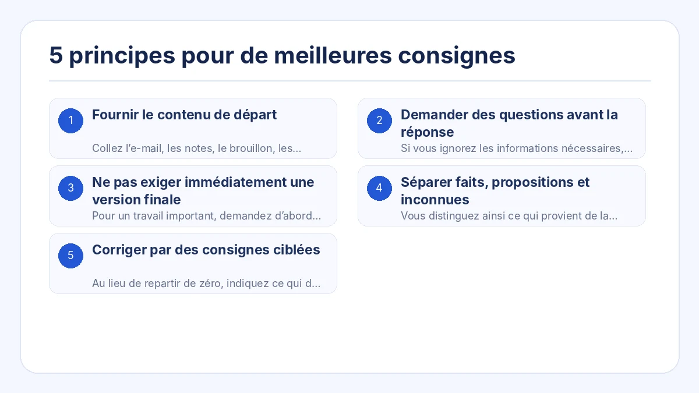
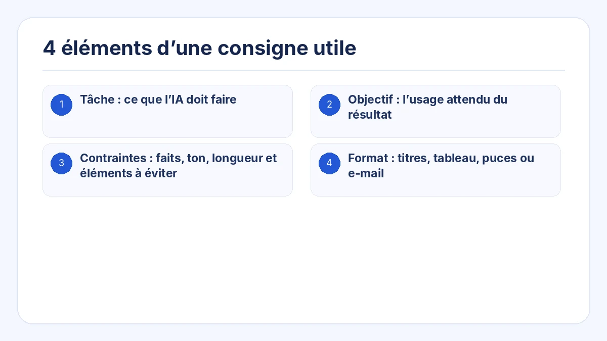
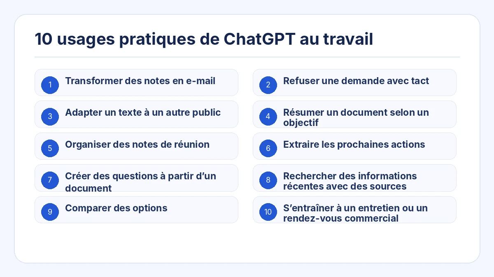
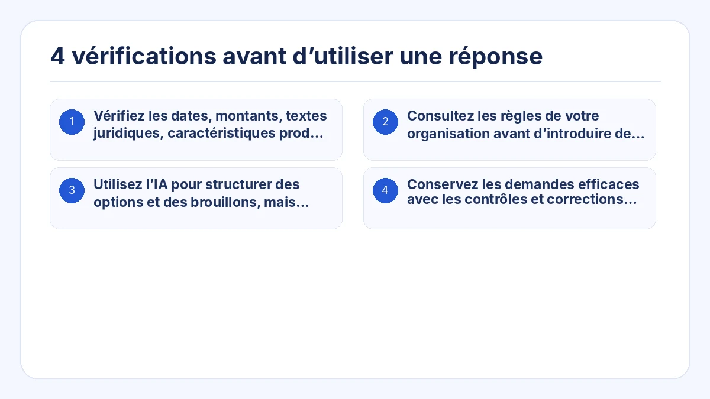

Ce guide présente une méthode concrète pour utiliser ChatGPT au travail. Il ne s’agit pas de mémoriser une formule magique, mais de fournir le contexte, les contraintes et le format de sortie adaptés à la tâche.
Vous pouvez copier l’exemple, remplacer les éléments entre crochets, puis vérifier le résultat avant de l’utiliser dans une situation réelle.
À retenir
- Fournir le document ou les notes de départ au lieu de demander à l’IA d’inventer tout le contenu.
- Lui demander de poser des questions si des informations essentielles manquent.
- Découper les tâches complexes en cadrage, vérification et rédaction.
- Séparer les faits, les propositions et les éléments non confirmés lorsque la précision compte.
- Relire la première réponse et donner des consignes de correction précises.

1. Fournir le contenu de départ
Collez l’e-mail, les notes, le brouillon, les données ou les éléments sur lesquels la réponse doit s’appuyer. Précisez que les faits absents ne doivent pas être ajoutés.
2. Demander des questions avant la réponse
Si vous ignorez les informations nécessaires, demandez à ChatGPT d’identifier les éléments manquants et de poser au maximum trois questions avant de rédiger.
3. Ne pas exiger immédiatement une version finale
Pour un travail important, demandez d’abord un plan ou une liste des points à inclure. Validez la direction, puis demandez le texte final.
4. Séparer faits, propositions et inconnues
Vous distinguez ainsi ce qui provient de la source, ce que l’IA suggère et ce qui doit encore être confirmé par une personne.
5. Corriger par des consignes ciblées
Au lieu de repartir de zéro, indiquez ce qui doit changer : réduire la longueur, calmer le ton, placer la conclusion en premier ou supprimer les affirmations non étayées.
4 éléments d’une consigne utile
Remplacez les éléments entre crochets par votre situation. Demandez à l’IA de ne pas inventer d’informations manquantes et de lister séparément les points à confirmer.
- Tâche : ce que l’IA doit faire
- Objectif : l’usage attendu du résultat
- Contraintes : faits, ton, longueur et éléments à éviter
- Format : titres, tableau, puces ou e-mail

## Tâche
Rédiger une réponse au message client ci-dessous.
## Objectif
Reconnaître le problème, expliquer ce qui est confirmé et indiquer clairement la prochaine étape.
## Contenu de départ
[Coller le message du client et les faits internes confirmés]
## Contraintes
- Ne pas promettre de délai de résolution non confirmé.
- Séparer les faits confirmés des points encore en cours d’analyse.
- Employer un ton professionnel et posé.
- Ne pas ajouter de faits absents du contenu fourni.
## Format attendu
1. Objet
2. Corps de l’e-mail
3. Points à confirmer avant envoi10 usages pratiques de ChatGPT au travail

1. Transformer des notes en e-mail
Précisez le destinataire, l’objectif, les points à inclure, l’échéance et le ton.
2. Refuser une demande avec tact
Indiquez ce qui n’est pas possible, la raison partageable et une alternative réaliste.
3. Adapter un texte à un autre public
Conservez les faits et changez l’explication pour un client, un dirigeant ou un débutant.
4. Résumer un document selon un objectif
Précisez qui lira la synthèse et quelle décision elle doit faciliter.
5. Organiser des notes de réunion
Extrayez décisions, actions, responsables, échéances et points ouverts.
6. Extraire les prochaines actions
Distinguez les informations à lire des tâches à réaliser.
7. Créer des questions à partir d’un document
Repérez les lacunes, contradictions, risques et éléments à confirmer.
8. Rechercher des informations récentes avec des sources
Demandez les dates, les sources primaires et une distinction claire entre faits et interprétation.
9. Comparer des options
Définissez les critères et les priorités propres à votre situation.
10. S’entraîner à un entretien ou un rendez-vous commercial
Fixez le rôle, le scénario, les règles de dialogue et les critères de retour.
4 vérifications avant d’utiliser une réponse
- Vérifiez les dates, montants, textes juridiques, caractéristiques produit et liens sources.
- Consultez les règles de votre organisation avant d’introduire des informations confidentielles.
- Utilisez l’IA pour structurer des options et des brouillons, mais conservez la décision finale auprès d’une personne responsable.
- Conservez les demandes efficaces avec les contrôles et corrections qui ont rendu le résultat exploitable.

Questions fréquentes
Une demande plus longue donne-t-elle toujours une meilleure réponse ?
Non. Elle est utile si elle contient les informations nécessaires. Trop de contexte peut masquer les conditions importantes.
Que faire si la réponse ne correspond pas à mes attentes ?
Décrivez précisément l’écart : longueur, public, structure, ton ou mélange entre faits et suggestions.
Comment utiliser ChatGPT si je ne sais pas quoi demander ?
Demandez-lui de vous interroger : « Pose-moi une question à la fois jusqu’à disposer de suffisamment d’informations pour réaliser cette tâche. »
Construire une demande IA prête à l’emploi à partir d’une tâche
Construire une demande structurée sans partir d’une page blanche
Prompt Ready propose des usages professionnels comme répondre à un message, organiser une réunion, adapter un texte, comparer, rechercher et simuler une conversation. Choisissez l’usage, ajoutez le contenu et les contraintes, puis copiez la demande.
Prompt Ready est une application Windows et macOS qui aide à structurer des demandes pour ChatGPT, Gemini, Claude et d’autres services d’IA. Choisissez une tâche, ajoutez le texte source et vos contraintes, puis copiez une demande prête à l’emploi.
Prompt Ready traite le texte localement et ne l’envoie pas automatiquement vers un service d’IA externe ni vers le serveur du développeur. Une fois la demande collée dans un service d’IA, la politique de ce service s’applique.
Commencer par une tâche réelle et améliorer la demande par le dialogue
Choisissez une tâche existante, par exemple répondre à un client, organiser une réunion ou comparer des options. Ajoutez l’objectif, les contraintes et le format, puis considérez la première réponse comme un brouillon.